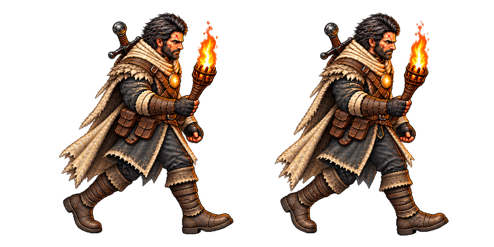
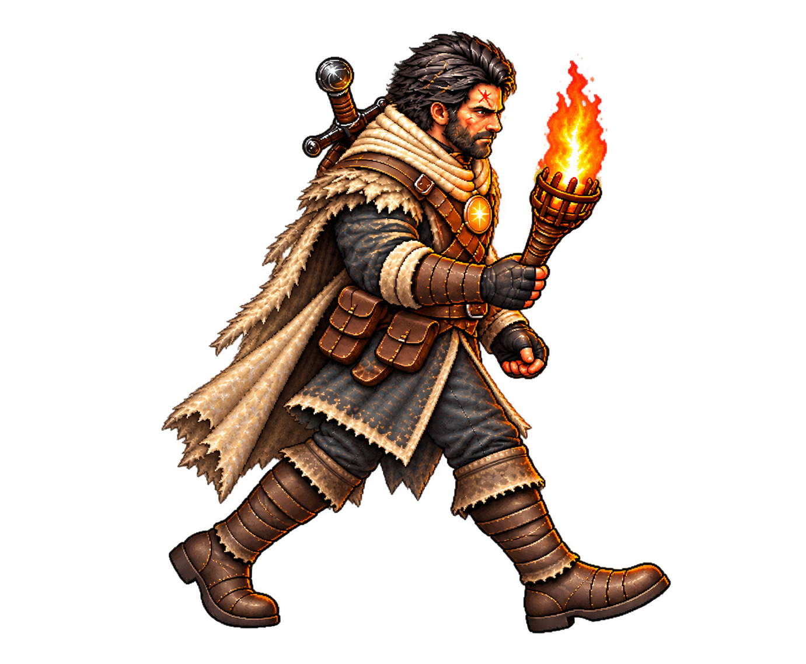
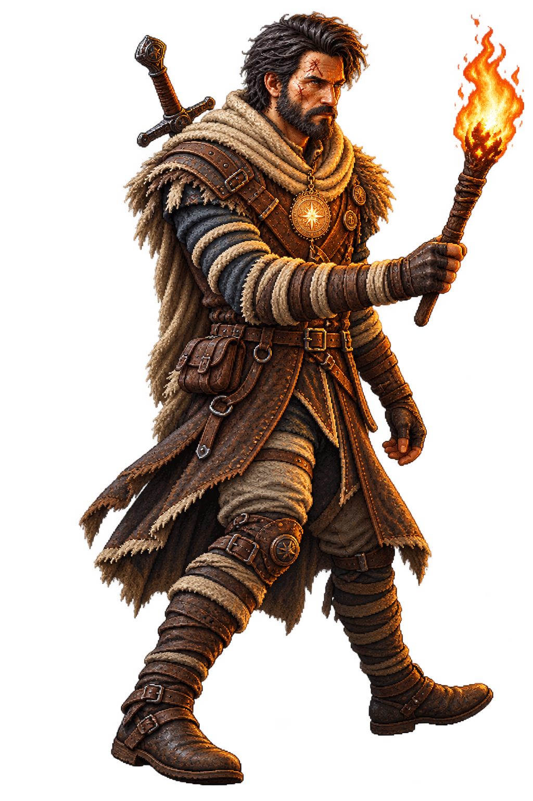

contacts-v01.png
REPROVADO: dois contatos com mesma perna à frente.

Nenhuma tentativa admitida. Comparação de três resultados: repetição de pose versus perda de continuidade visual.
REPROVADO: dois contatos com mesma perna à frente.

REPROVADO: contato oposto não demonstrado com clareza.

REPROVADO para continuidade: perna próxima recua, mas câmera, traje, tocha e escala divergem do contato A.
